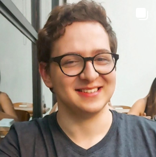

|
|
|
|
Gabriel Camara de Oliveira  |
|
Bem vindo ao meu site/currículo, aqui você vai entender um pouco mais sobre mim, aspirações, desejos, experiências, aprendizados e por ai vai. Tudo vai estar de forma dinâmica, espero que não tenha problemas ao navegar por essa página, entre em contato em caso de alguma dúvida ou se quer me contratar ;)
Brasileiro, 20 Anos Estado Civil: Solteiro Estado: São Paulo Cidade: Franca Bairro: Jardim João Liporoni Rua: Maria Moura Furtado Primo Ribeiro, 1440 |
Formação/Estudos
Concluido |
Objetivos/Prospectivas
Pessoalmente |
Contato
Telefone: 16 3409-0530 |
by Gabriel Camara - FATEC Franca 2024